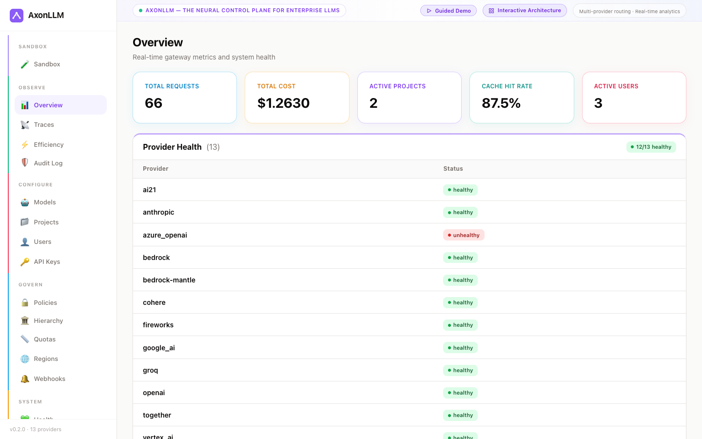

AxonLLM is the neural control plane for enterprise LLMs. Point your existing OpenAI SDK at it and get intent-aware routing across 13 providers, hierarchy-driven budgets that block before you overspend, and one audit trail for all of it.
Local non-production demo seeded with Acme Corp, projects, users, policies, usage, and audit history.

Interactive Architecture
Play four real request paths: smart multi-provider routing, provider fallback, governed Athena SELECT, and tenant-admin RBAC.
How It Works
Every call runs the same pipeline. Guardrails and quotas are checked before a provider is billed, not after.
Client AxonLLM Providers POST /v1/chat/completions | |------> Validate --> Injection Scan --> PII Redact | | | | score: 12 [EMAIL_1] | | | Quota Hierarchy | +-----------------------------------------+ | | org --> business unit --> project --> env | | | rpm, budget, max_tokens, allowed models | | +-----------------------------------------+ | | | within budget | | | Classifier --> task: math (conf 1.00) | | | Router | +-----------------------------------------+ | | benchmark score x cost = ranking | | | 70% quality / 30% cost, configurable | | +-----------------------------------------+ | | | picked: claude-sonnet via bedrock | | | | +----------------------------------> completion | | | PII Re-inject <---------------------------+ | | | Cost + Audit (SHA-256 hash chain) | | +<-----------------------------+ 200 OK + usage + routing trace On provider failure: fall back down the chain. Mid-stream, no switch — the client already has bytes, so the error surfaces honestly instead.
Capabilities
Forwarding requests is the easy part. The value is in everything that happens around the forward.
A classifier reads the prompt's intent — math, coding, reasoning, summarization, creative writing — and ranks candidates by benchmark score against cost. An unpriced model scores as unknown, not free, so it can't win for being unmeasured.
Scatter one prompt across a panel of models, gather the survivors, and have a judge model synthesize the answer. Configurable quorum, cost ceiling, and best-single fallback when the panel comes up short.
Write one OpenAI-shaped tool definition. Each adapter translates it into its provider's own dialect — Anthropic input_schema, Bedrock toolSpec, Gemini functionDeclarations, Cohere parameter_definitions — and translates the call back.
Policy hierarchy from org down to environment, where a child can only tighten what it inherits. Rate limits, spend caps, token ceilings and model allow-lists all resolve from the same tree — and stop a request before it bills.
PII is redacted before the model sees the prompt and re-injected into the response — including across streaming chunk boundaries, where the placeholder can split in half. Prompt injection is scored on the way in.
Every request lands in a SHA-256 hash chain with DynamoDB persistence, so a deleted or edited record breaks the chain visibly instead of quietly.
Hub-and-spoke across regions: single, active-passive, or active-active with weighted distribution. Strict data-residency mode filters spokes by zone so in-region data stays in region.
ALB OIDC, bearer tokens, and scoped API keys. Cognito validates enterprise SAML and the gateway resolves its OIDC result through canonical tenant authority. SCIM 2.0 handles joiner/mover/leaver provisioning.
Per-user profiles from real usage: dominant task type, typical vs. optimal model, prompt-quality scoring, and where tokens are being wasted on over-provisioned models or bloated conversation history.
Quick Start
AxonLLM speaks the OpenAI wire format at /v1. Existing code moves over by changing base_url — no reshaping requests, no new SDK. Routing, quotas, guardrails and cost attribution all still apply.
from openai import OpenAI client = OpenAI( base_url="http://localhost:8000/v1", # AxonLLM, not api.openai.com api_key="axon_your_key_here", # an AxonLLM key ) # Any model in the registry — the gateway picks the provider resp = client.chat.completions.create( model="claude-sonnet", messages=[{"role": "user", "content": "Explain CRDTs"}], ) # Or let the classifier choose the model for you resp = client.chat.completions.create( model="", # empty = smart routing messages=[{"role": "user", "content": "what is 4!"}], ) # Or ask a panel and have a judge synthesize the answer resp = client.chat.completions.create( model="ensemble:quality", messages=[{"role": "user", "content": "Explain CRDTs"}], )
Routing Modes
The same endpoint serves all three. The model field decides which one you get.
You name the model; AxonLLM picks the provider and falls back down the chain on failure. Round-robin, weighted, least-latency or cost-optimized distribution across 55 mappings and 51 configured models; 46 models are production-price-ready with shipped pricing.
The classifier reads intent and the router ranks candidates on benchmark score blended with real price — resolved from the same table that bills you, so the cost used to choose can't disagree with the cost charged.
A panel answers in parallel, a judge synthesizes. Quorum decides how many must survive; a cost ceiling caps the blast radius; best-single fallback returns the strongest answer rather than an error.
Providers
Each provider gets a real translation layer, not a lowest-common-denominator passthrough. Bedrock and Bedrock Mantle authenticate through AWS credentials, so they work with no API key at all.
Readiness
The dangerous misconfigurations aren't the ones that 500. They're the ones that serve traffic happily while being wrong. AxonLLM ships a checklist for the class of bug that leaves no error in any log.
| What's wrong | What you see | Why nobody notices |
|---|---|---|
| Model has no price | $0.00 spend Requests succeed. | A budget cap on a free-looking model can never trigger. The dashboard renders a number; it's just the wrong one. |
| Provider retired a model id | 200 OK An undocumented alias answers. | You're billed for a different model than you asked for — and aliases appear on no price list, so it bills $0.00 too. |
| Credentials missing | clean boot No warning logged. | Uncredentialled providers are dropped without raising. Invisible until a request happens to route there. |
AXON_AUTH_MODE=LOG_ONLY |
200 OK Every request is served. | The log records a denial that never happened, so the audit trail reads like the control is working. |
| Demo data loaded | healthy metrics A populated dashboard. | Fabricated spend in a real deployment, because the container's default seeds it. |
| Persistence unreachable | 200 OK Requests succeed normally. | DynamoDB writes are swallowed by design — a provider call shouldn't 500 over a Dynamo hiccup — so billing records vanish silently. |
A check that couldn't run reports UNKNOWN, never PASS — collapsing those is exactly how an expired credential renders as a green checklist. And nothing here is enforced: no check can refuse a boot or reject a request, because a readiness page that can take down a deployment is one nobody enables.
Open source under MIT-0. One docker compose up to a working gateway.